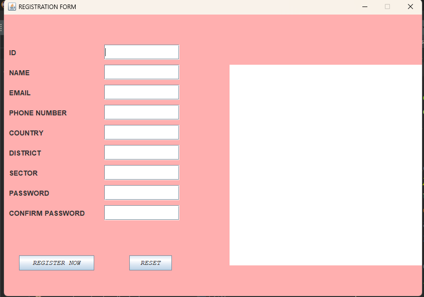
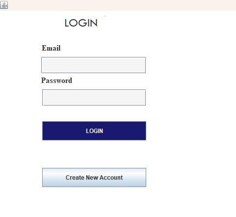
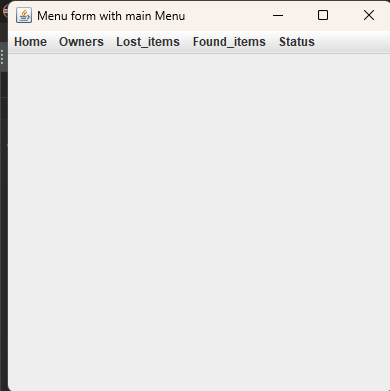
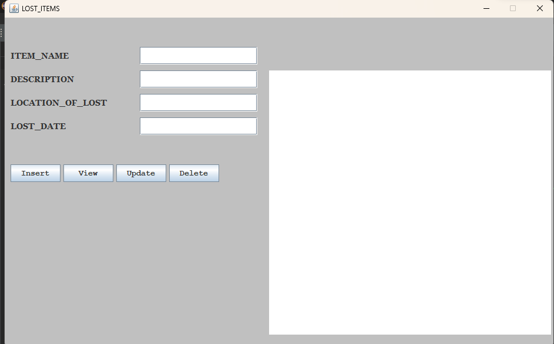
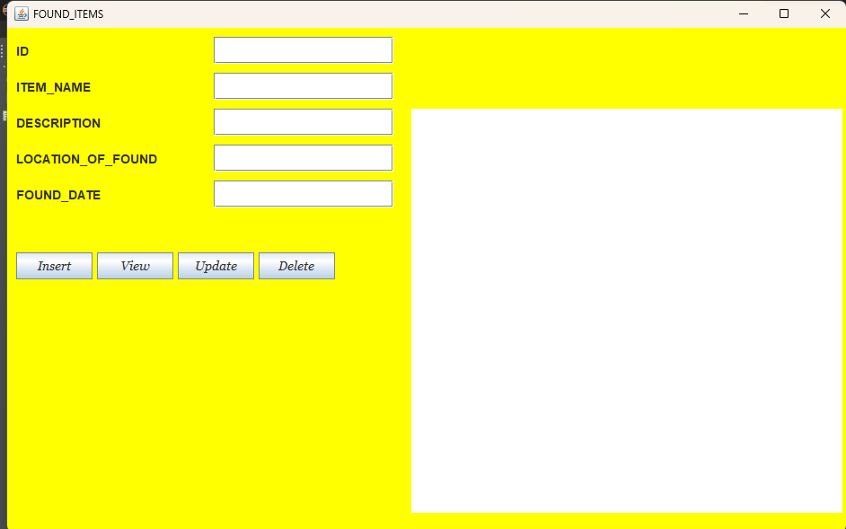
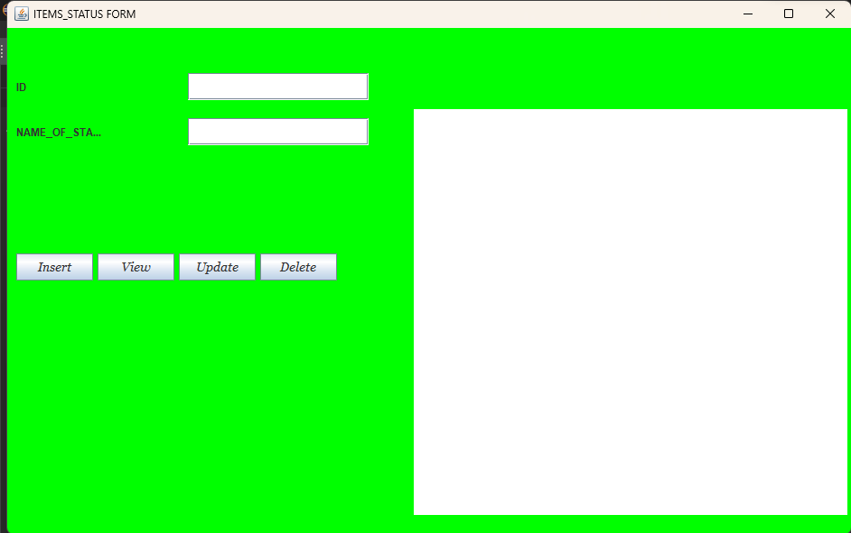

HOME
ABOUT US
CONTACT US
SERVICES
FORM
TABLE
MY BOOK
Description of all entities and their corresponding attributes that are in data base
1.Owners table structure:
This table will hold the names and other address that be-longs to those who will register in order to report their lost items.
Id PRIMARY KEY : id for the owner of item.
Name (VARCHAR): name of item’s owner
Phone (VARCHAR) :phone nbr of item’s owner
Country (VARCHAR) : country where item’s owner belong
District (VARCHAR) : district in which item’s owner belongs
Sector ( VARCHAR) : sector in which item’s owner belongs
Password: Password made by user to help him/her log in next time
Confirm_password : this confirms password user entered before
2. LOST_ITEMS table structure
This table is the one to keep records of those reported lost items that users or owners will report to be lost.
Item_id primary key : id of reported lost item
Name (varchar): name of reported lost item
Description (varchar): description of reported lost item
Lost_date (varchar): date on which items was lost.
3. FOUND_ITEMS table structure:
This table is the one to keep records of those found items that users or owners reported previously to be lost.
Item_id primary key: id of found item
Name (varchar): name of that found item
Description (varchar): description of founditem
Found_date (varchar): date on which items was found.
4. STATUS OF ITEMS table structure:
This table status items is to show the status of items in da-tabase whether it is lost or already found.
Id primary key : status id of items
Name (varchar): status name of items
5. ADMIN TABLE structure:
Username (varchar): username to be used by admin
Password : password to be used by admin
JAVA PROGRAMMING
Description
Introduction
In this chapter I will be describing how powerful generalpurpose programming language was used to create the analyzed system. Under this chapter I will undergo full detail of how everything will function together with database that have been describe above and how it cope with full analyzed system.
Tools used to develop this system in java programming
Eclipse IDE: an integrated development environment used in computer programming. It contains a base workspace and an extensible plug-in system for customizing the environment. It is the second-most-popular IDE for Java development, and was the most popular.
JAR stands for Java Archive: It's a file format based on the popular ZIP file format and is used for aggregating many files into one. Although JAR can be used as a general archiving tool, the primary motivation for its development was so that Java applets and their requisite components.
MySQL Connectors: MySQL provides standards-based drivers for JDBC, ODBC, and .Net enabling developers to build database applications in their language.
Forms and Images
Forms
1.Registration Form

2.Login Form

3.LostandfounditemMenu. Form

4.lost_items Form

5.found_items Form

6. status_items
